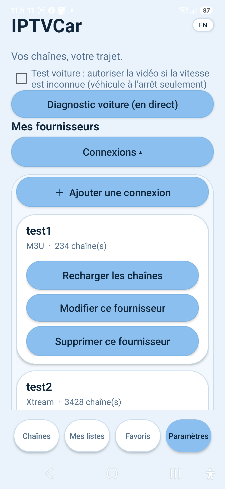

Compatibilité
Étudier les limites imposées par Android Auto et les plateformes visées.
Une expérimentation pour explorer l’affichage multimédia en voiture, en tenant compte des restrictions de compatibilité et de sécurité.
IPTVCar est une expérimentation technique. L’objectif est d’étudier les possibilités et limites d’affichage multimédia sur les plateformes automobiles compatibles.
Visuel descriptif du projet — illustration de présentation, distincte des captures réelles ci-dessous.
Quelques écrans du prototype IPTVCar. Sélectionne une vignette pour afficher la capture en grand.

Étudier les limites imposées par Android Auto et les plateformes visées.
Tester les pistes techniques sans promettre une compatibilité universelle.
La conduite reste prioritaire; aucune fonction ne doit encourager une interaction dangereuse en roulant.
La compatibilité dépend de la version du système, de l’appareil et des règles de la plateforme. Aucune disponibilité générale n’est annoncée.